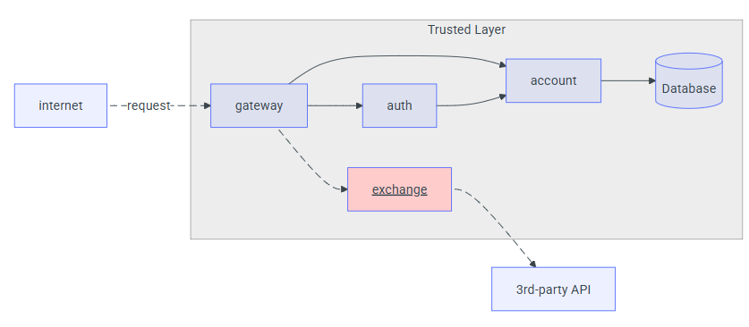

Exchange API¶
Overview¶
A Exchange API é um microsserviço desenvolvido em Python com FastAPI que permite converter valores entre duas moedas qualquer, utilizando uma fonte externa de taxas de câmbio (no caso, a AwesomeAPI). O serviço expõe um único endpoint HTTP GET /exchange/{from_currency}/{to_currency}, que recebe os códigos das moedas de origem e destino, consulta a API externa, e retorna o valor de venda, o valor de compra, a data/hora da última cotação e o id-account do usuário (injetado via header).
Tecnologias e Dependências¶
- Linguagem: Python 3.8+
- Framework Web: FastAPI
- Cliente HTTP: requests
- Servidor ASGI (desenvolvimento): Uvicorn
- Fonte de taxas de câmbio: AwesomeAPI (padrão)
- Variáveis de ambiente (opcionais):
EXTERNAL_API_URL(URL base da API de câmbio; default:https://economia.awesomeapi.com.br/last)PORT(porta para execução via Uvicorn; default: 8000)
Principais Dependências (requirements.txt)¶
txt
fastapi
uvicorn
requests
Descrição do Endpoint¶
http GET /exchange/{from_currency}/{to_currency}
-
Parâmetros de caminho (path parameters):
-
from_currency(string): Código da moeda de origem (por exemplo,USD,EUR,BRL). -
to_currency(string): Código da moeda de destino (por exemplo,BRL,USD). -
Headers obrigatórios:
-
id-account(string): Identificador da conta/usuário que faz a requisição. Caso não seja enviado, a API retorna HTTP 401 Unauthorized:{ "detail": "Missing id-account header" } -
Resposta de Sucesso (HTTP 200):
{
"sell": 0.82,
"buy": 0.80,
"date": "2021-09-01 14:23:42",
"id-account": "0195ae95-5be7-7dd3-b35d-7a7d87c404fb"
}
sell(float): Taxa de venda (ask) da moeda de destino em relação à moeda de origem.buy(float): Taxa de compra (bid) da moeda de destino em relação à moeda de origem.date(string): Timestamp da última cotação (formatoYYYY-MM-DD HH:MM:SS).-
id-account(string): Mesmo valor enviado no header, para rastreabilidade. -
Possíveis Códigos de Erro:
-
401 Unauthorized: Header
id-accountausente. -
503 Service Unavailable: Falha ao consultar a API externa (AwesomeAPI) ou timeout.
{ "detail": "Erro ao consultar a API externa de câmbio." }
Fluxo de Funcionamento¶
- O cliente envia uma requisição
GET /exchange/{from_currency}/{to_currency}incluindo o headerid-account, por exemplo:
GET /exchange/USD/BRL
Headers:
id-account: 0195ae95-5be7-7dd3-b35d-7a7d87c404fb
-
A aplicação FastAPI faz validação:
-
Se o header
id-accountnão estiver presente, retorna 401 Unauthorized. -
Constrói a currency pair em formato
{FROM}-{TO}(por exemplo,USD-BRL). -
Conecta na API externa AwesomeAPI (ou outra configurada via
EXTERNAL_API_URL):
GET https://economia.awesomeapi.com.br/last/USD-BRL
-
Se a chamada à API externa for bem-sucedida:
-
Extrai o objeto JSON retornado, que contém as chaves
ask,bidetimestamppara a pair"USDBRL". - Converte
askebidparafloat. - Transforma o
timestamp(unidade: segundos) em data/hora no formatoYYYY-MM-DD HH:MM:SS. -
Retorna JSON com
sell,buy,datee repassa oid-account. -
Se ocorrer qualquer erro (timeout, par inexistente, resposta inválida), retorna 503 Service Unavailable.
Estrutura do Código (main.py)¶
import os
from datetime import datetime
import requests
from fastapi import FastAPI, Request, HTTPException
app = FastAPI(
title="Exchange API",
version="1.0.0",
description="Converte valores entre duas moedas usando uma fonte externa (AwesomeAPI)."
)
# URL da API de câmbio externa
EXTERNAL_API_URL = os.getenv("EXTERNAL_API_URL", "https://economia.awesomeapi.com.br/last")
@app.get("/exchange/{from_currency}/{to_currency}")
def convert_currency(from_currency: str, to_currency: str, request: Request):
# Verifica se o header com o ID da conta está presente (injetado pelo gateway)
account_id = request.headers.get("id-account")
if not account_id:
raise HTTPException(status_code=401, detail="Missing id-account header")
# Ex: USD-BRL
pair = f"{from_currency.upper()}-{to_currency.upper()}"
try:
response = requests.get(f"{EXTERNAL_API_URL}/{pair}", timeout=5)
response.raise_for_status()
data = response.json()
key = f"{from_currency.upper()}{to_currency.upper()}"
quote = data[key]
except Exception as exc:
raise HTTPException(
status_code=503,
detail="Erro ao consultar a API externa de câmbio."
) from exc
return {
"sell": float(quote["ask"]),
"buy": float(quote["bid"]),
"date": datetime.fromtimestamp(int(quote["timestamp"])).strftime("%Y-%m-%d %H:%M:%S"),
"id-account": account_id
}
if __name__ == "__main__":
import uvicorn
port = int(os.getenv("PORT", "8000"))
uvicorn.run("main:app", host="0.0.0.0", port=port, reload=True)
Detalhes Importantes¶
-
Framework FastAPI:
-
Cria automaticamente documentação interativa (Swagger UI) em
/docse Redoc em/redoc. - Valida tipos de parâmetros e retorna erros 422 caso os formats estejam incorretos.
-
Validação de Header:
-
A
id-accountdeve ser injetada pelo serviço de API Gateway antes de encaminhar a requisição a este microsserviço. - Sem esse header, a requisição é negada – garantindo rastreabilidade da conta solicitante.
-
Chave de Consulta (
key) no JSON Externo: -
A AwesomeAPI devolve um JSON onde a chave principal é a concatenação das moedas:
"USDBRL": { "ask": "...", "bid": "...", ... }. - Por isso, é importante normalizar as strings para MAIÚSCULAS.
-
Tratamento de Erros:
-
Se o par de moedas for inválido, se a API externa estiver fora do ar ou retornar erro 4xx/5xx, a rota retorna 503 Service Unavailable com mensagem genérica.
-
Formato de Data:
-
A
timestampretornada pela API externa vem em segundos desde 1970. Convertida paraYYYY-MM-DD HH:MM:SSpara legibilidade.
Variáveis de Ambiente¶
-
EXTERNAL_API_URL(opcional) URL base da fonte de taxas de câmbio. -
Default:
https://economia.awesomeapi.com.br/last -
Exemplo para outra API:
export EXTERNAL_API_URL="https://api.exchangerate-api.com/v4/latest" -
PORT(opcional) Porta TCP em que o Uvicorn irá expor o serviço. -
Default:
8000
Como Executar Localmente¶
- Clonar o repositório:
git clone <URL-do-repositório>
cd exchange-service
- Criar e ativar um ambiente virtual (recomendado):
python3 -m venv .venv
source .venv/bin/activate
- Instalar dependências:
pip install fastapi uvicorn requests
- Configurar variáveis de ambiente (opcional):
export EXTERNAL_API_URL="https://economia.awesomeapi.com.br/last"
export PORT=8000
- Iniciar o servidor:
uvicorn main:app --host 0.0.0.0 --port ${PORT:-8000} --reload
-
Testar no navegador ou via curl:
-
Documentação interativa:
* Exemplo de requisição comhttp://localhost:8000/docscurl:curl -H "id-account: 0195ae95-5be7-7dd3-b35d-7a7d87c404fb" \ http://localhost:8000/exchange/USD/BRL
Exemplo de Uso¶
Requisição:
GET /exchange/EUR/GBP HTTP/1.1
Host: localhost:8000
id-account: 0195ae95-5be7-7dd3-b35d-7a7d87c404fb
Resposta (200 OK):
{
"sell": 0.8582,
"buy": 0.8521,
"date": "2021-09-01 14:23:42",
"id-account": "0195ae95-5be7-7dd3-b35d-7a7d87c404fb"
}
Diagrama de Fluxo¶

Considerações Finais¶
- A Exchange API provê um serviço simples, mas essencial, para qualquer sistema de pagamentos, e-commerce ou plataforma financeira que precise de cotações em tempo real.
-
É possível estender o código para:
-
Suportar outras APIs de câmbio (basta ajustar
EXTERNAL_API_URLe tratamento de resposta). - Adicionar cache (Redis, in-memory) para reduzir chamadas externas e melhorar performance.
- Implementar validação de parâmetros (moedas válidas, formatos).
- Cobrir testes unitários/mocks para chamada à API externa.
Esse documento deve servir como referência para entender o funcionamento interno, configuração e ponto de entrada do microsserviço de câmbio.